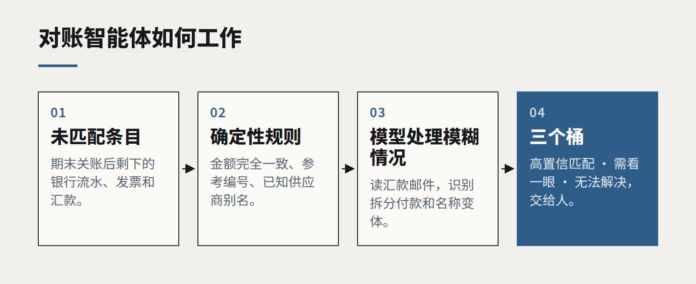

后台的智能体，从对账开始
今年我们部署过最有用的 AI 智能体，都不和客户对话。它们匹配发票、追踪异常，然后把真正需要判断的那三件事交给人。

“智能体”（agent）已经成了技术圈被拉伸得最厉害的词之一。它可以指一个带搜索工具的聊天机器人，也可以指一个在少量监督下、跨多个应用规划并执行多步骤工作的系统。演示往往偏向戏剧化的那一端：帮你订差旅、和供应商谈判、跑一整场营销活动的智能体。
那些悄悄收回了成本的部署，看起来则完全不同。它们待在财务和运营部门，做规则清晰、窄而重复的工作，并且围绕“人接手的那一刻”来设计。
为什么对账是理想的第一份工作
对账——把一组记录和另一组对上，并解释差异——几乎具备你希望第一个智能体项目拥有的所有特征。
- 量大、变化少。 每月成百上千条相似的条目，大多数都能干净地对上。
- “完成”的定义清晰。 一行要么对上了，要么没对上。智能体的成效可以无争议地衡量。
- 规则现成。 财务团队早就知道为什么会对不上：时间差、部分付款、四舍五入、某个供应商用两个名字开票。
- 影响范围可控。 智能体只提出匹配建议、起草解释；未经人批准，什么都不会流出公司。
- 今天就很痛苦。 这是人们不喜欢的工作，因此推广起来比自动化人们喜欢的工作容易得多。

好的智能体是怎么做的
我们用的模式刻意不求宏大。智能体拿到未匹配的条目，先应用确定性规则——金额完全一致、参考编号、已知的供应商别名——然后才用语言模型处理模糊情况：读一封汇款邮件、识别出“ACME Ltd”和“Acme Holdings”是同一个付款方、发现三笔付款加起来正好是一张发票。
每一个匹配建议都附带推理过程和证据。条目被分进三个桶：高置信度已匹配、已匹配但需要看一眼、确实无法解决。人的工作从“做匹配”变成“复核第二个桶、处理第三个桶”。
关键在于，每一个人工决定都会被记录下来。有人纠正了一个匹配建议，它就变成一条新规则或一个新的评测样本。智能体一个月一个月地更懂这家企业的各种怪癖，而且任何人都可以审计这个过程。
衡量什么
- 自动匹配的比例，以及这部分的错误率（抽样核查）。
- 从期末关账到对账完成的时间。
- 每月在这项任务上花费的员工工时，前后对比。
- 最终到达人手里的异常数量，以及每个异常耗时多久。
在我们做过的项目里，最亮眼的结果很少是裁员，而是月结提前好几天完成，原本做匹配的人，现在把时间花在异常处理上——而那一直都是这份工作里真正有价值的部分。
更大的启示
让智能体从规则已知、输出可核查、并且已经有人对结果负责的地方起步。面向客户的自主性可以晚一点再来——先在容错的工作上，搞清楚你的智能体是怎么出错的。